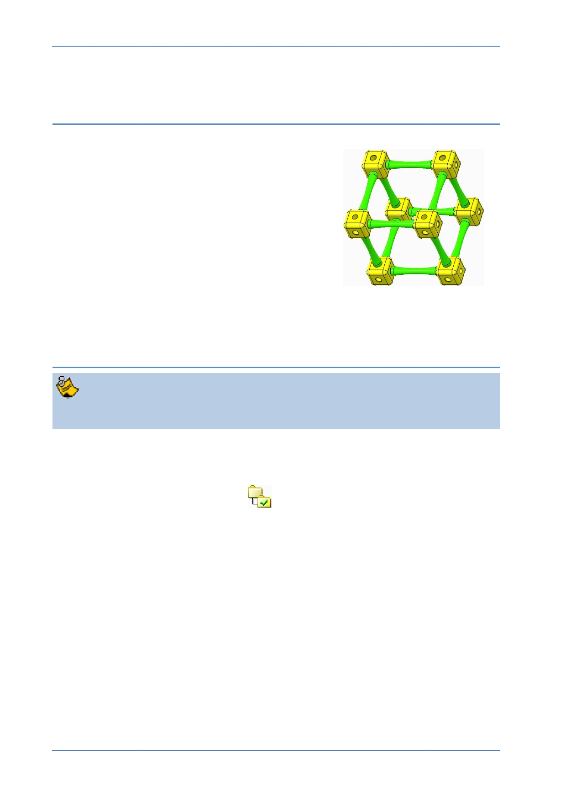

PTC Academic Program
Module 3
Procedure – Assembly
Scenario
This section will teach you how to put the
components you have created together into an
assembly.
You will start by creating a new assembly file. In the
new assembly, you will first assemble a corner cube
to the default location. Struts are then assembled
into holes in the cube.
Once you have struts in place, additional cubes and
struts can be added to the assembly.
Step 1: Set working directory and create a new assembly
If you just completed Module 2 and have not exited from Creo Parametric, you
should skip tasks 1 and 2 below.
1. Start Creo Parametric.
2. Setting the working directory:
Click Select Working Directory
from the Data group of the Home tab.
In the Select Working Directory dialog box, browse into the folder where you
saved the Corner Cube and Strut models.
After you have browsed into the working directory folder, click OK to set that
folder as your working directory.
© 2012 PTC
Creo Parametric 2.0 Primer
Page 64